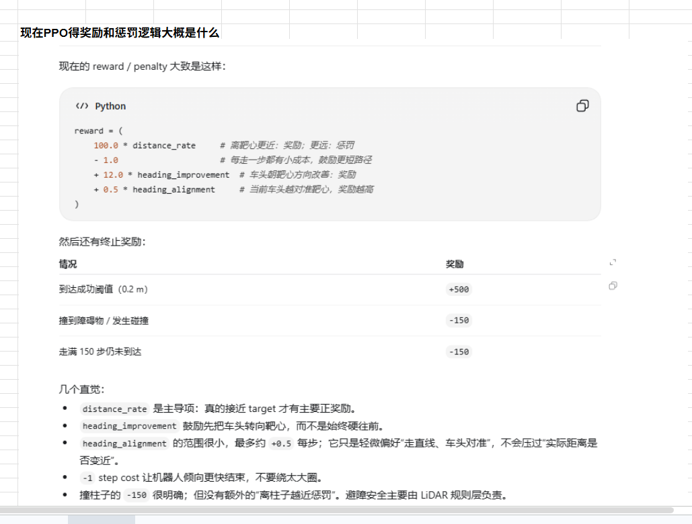
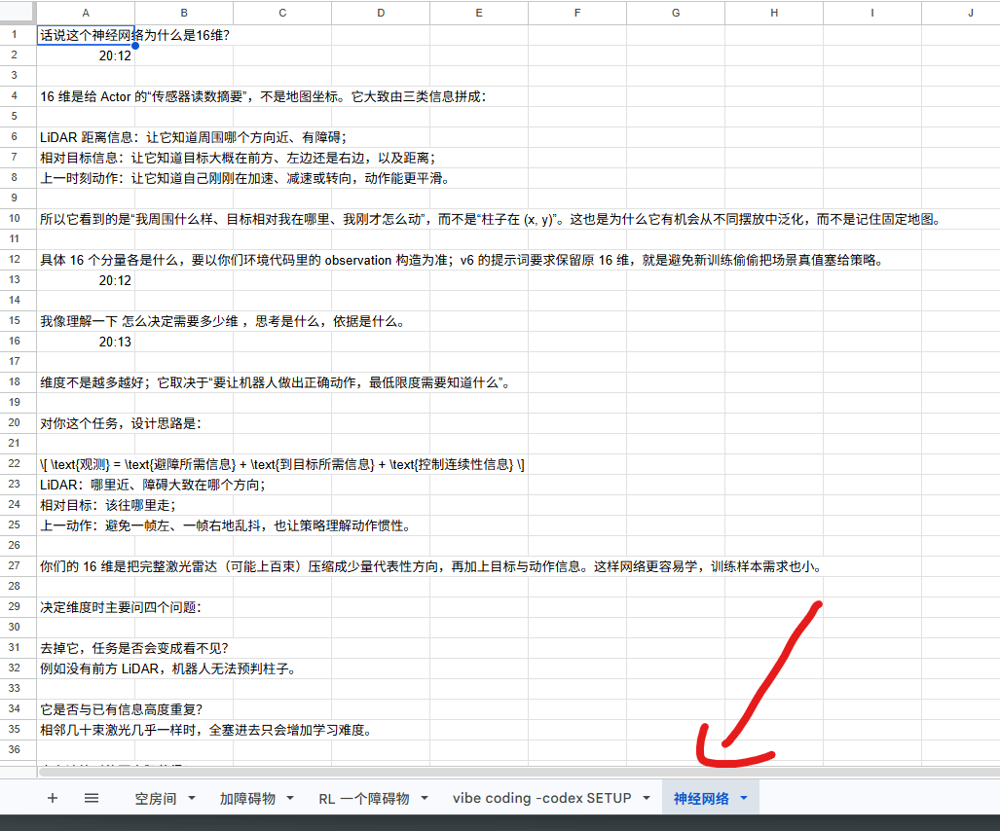
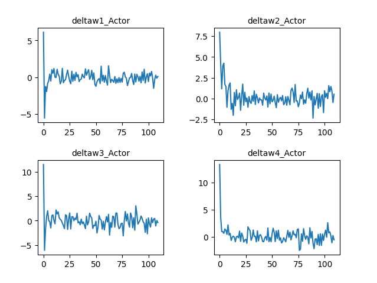
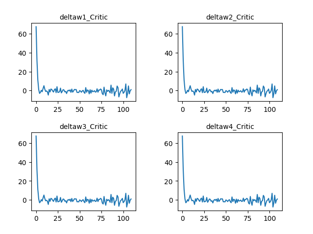
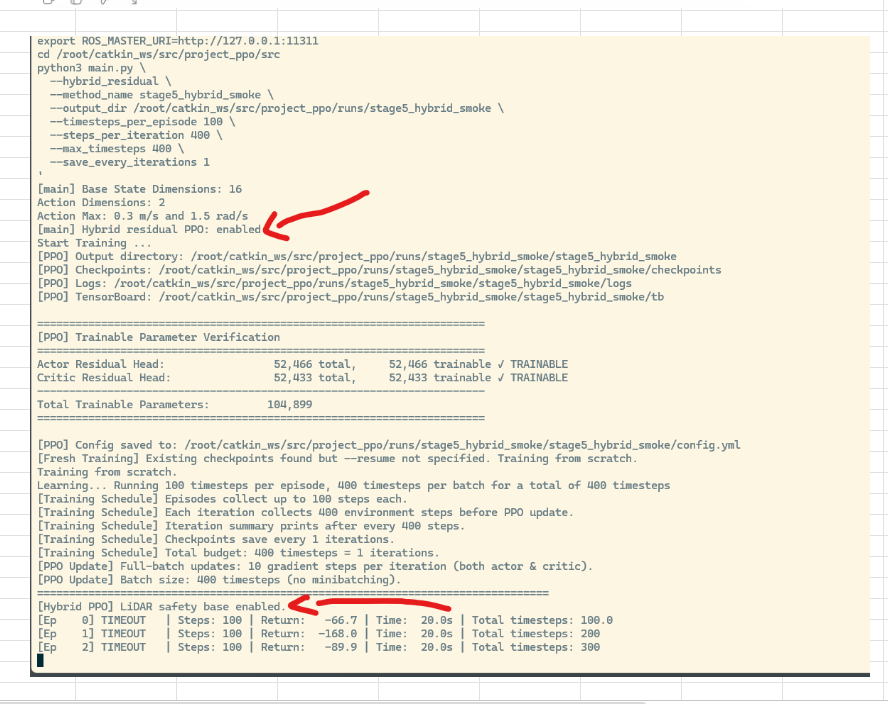
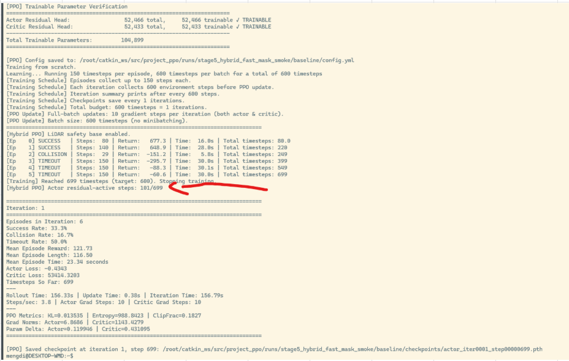
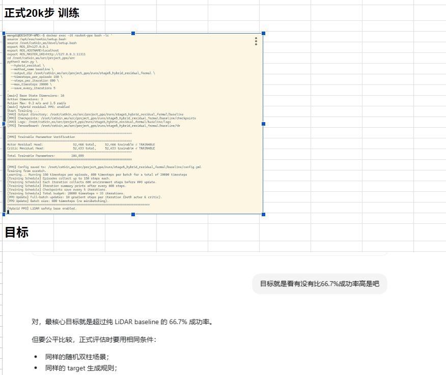
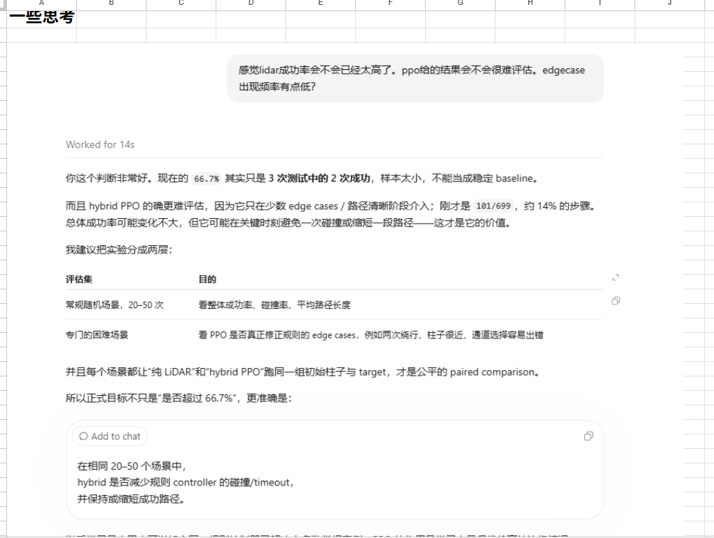

5k checkpoint：接口通了，行为没学会。
0/10 success · 10/10 collision确定性评估平均 15.6 步撞柱。动作确实送进 Gazebo，但 residual 幅度与策略结构不足以形成绕行。
NAVBOT · RAW EXPERIMENT NOTEBOOK
这份详细记录把 Google Sheet 截图、训练 CSV、TensorBoard 事件、评估 JSON 和 WSL 报告放回同一条时间线。每一轮都按“设置 → 结果 → 判断 → 下一步”整理；训练数据、冻结评估与 OOD 考试不会混用。
最早期直接提高速度，希望缩短训练时间。结果是仿真跑得更快，数据却更差。回到直线、转向和重复到达测试后，速度从约 0.80 m/s 退到 0.30，再冻结在 0.25 m/s。
Google Sheet 截图保存的是训练中途状态：54 回合、8 次成功、14.8%。当前同名 CSV 则包含 74 回合、6 次成功、8.1%。这说明同名日志后来可能被继续写入或重新运行。两组数字各自保留，不把它们伪装成同一次最终结果。
增加训练预算并没有自动提高成功率：固定目标 20k 反而从 20.0% 降到 13.6%。Turn-first aggressive 把碰撞降为 0，却留下 164 次 timeout。下一步因此不再是“继续跑更多 batch”，而是分离安全、前进效率和到达能力，并重新设计可诊断的障碍任务。
场景被故意设计成必然失败：机器人、圆柱和目标共线。纯 Goal-Seeking 只知道目标方向，不知道如何绕行。
20/20 碰撞，0 timeout，多数在 12–22 步终止。另一次零 residual 集成测试在第 13 步碰撞，总 return −255.484。失败稳定、位置明确，才适合作为学习任务。
下一轮不是让 PPO 从零学会导航，而是保留 Direct Goal，只学习小幅速度与转向修正。
下面不是版本号清单，而是连续的因果链。每一轮只在前一轮暴露的问题上增加新的证据或约束。

100 × distance_rate − 1
+ 12 × heading_improvement
+ 0.5 × heading_alignment成功到达 +500；碰撞与当时的 150-step timeout 均记 −150。关键盲点是：这个 reward 强烈鼓励接近目标与对准目标，却没有直接奖励“离障碍越来越远”；真正的硬安全仍由 LiDAR 终止规则负责。
500×Δdistance；collision −100，success +120先让策略学会朝目标走信号集中在距离，成功终奖偏弱；高速动作还会放大物理漂移100×Δdistance −1 + heading terms；success +500，collision −150减少绕圈、鼓励尽快结束并改善车头方向直达能力改善，但“对准目标”与“绕开障碍”仍可能冲突40×clip(Δclearance,±0.10)；collision −300障碍附近不应继续被“朝目标对齐”拉回柱子策略方向正确但幅度不足，35 步仍碰撞；reward 不能代替动作示范早期主要修改 reward，希望一个公式同时解决前进、朝向、安全与效率；后期逐渐把问题拆开：基础控制器负责去目标，LiDAR gate 负责何时介入，residual Actor 负责怎么避障，BC 提供正确动作锚点，curriculum 改训练分布，held-out 与 OOD 单独负责验收。
确定性评估平均 15.6 步撞柱。动作确实送进 Gazebo，但 residual 幅度与策略结构不足以形成绕行。
最大正转向仍碰撞；最大负转向能绕行并到达。零 residual 在 30 步碰撞。旧的 200-step 上限也被证明太短。
平均 residual 约 (−0.219, −0.086)。角速度符号与成功专家一致，但远弱于验证过的 [+1, −1]。继续调 reward 无法替代成功动作锚点。
3 条专家轨迹全部成功；BC MSE 从 0.9293 降到 0.0000176。随后 5,299 steps、24/24 训练成功，最终固定场景 10/10。
六个未训练的小扰动场景中只有 pillar-right 一次早期碰撞。局部泛化很强，但出现轻微左右敏感性。
Held-out 仍为 59/60，只是唯一失败从 pillar-right 转移到 yaw-left。“修好一个 case”不等于系统能力提高。
task 06/07 各有 4 次碰撞，task 02 有 4 次 timeout。小扰动的 98.33% 不能代表更大分布。
seed 61129，两个场景族 50/50 交替；31 success、15 collision、8 timeout。训练 rollout 不能当 acceptance。
只约束输出对称没有正确动作锚点。随后改为成对成功轨迹、严格 mirror 数据与 78D 时序 LiDAR；最终 clean-start PPO 在公平评估中达到 29/30。
Windows 端负责 high-level plan、spec、结果解释和 next step；WSL Codex Agent 直接修改共享源码并在 Docker 中执行 ROS / Gazebo。
10/10 Direct Goal baseline 单独保存并校验。
checkpoint、CSV、TensorBoard 与评估结果不互相污染。
关闭探索、禁止 optimizer update，再测固定、held-out 与 OOD。
0/10、碰撞轨迹和 timeout 与成功模型同样重要。
早期 Actor 使用 16 维输入：LiDAR 摘要、目标相对几何与上一动作。维度选择遵循信息充分性，而不是越多越好；clean-start 路线升级为 78D 时序观察。
最近障碍与方向摘要
距离与相对角度
上一时刻的线/角动作
36 LiDAR + 36 range-rate + history + goal

这里的 16 维不是地图坐标，也不是“网络越大越聪明”。它是每个控制时刻交给 Actor 的传感器摘要：障碍在哪里、目标相对机器人在哪里，以及上一拍采取了什么动作。具体分量应以当时环境代码中的 observation 构造为准。
这种相对观察不会要求网络死记一张固定地图，因此比绝对坐标更容易迁移到不同障碍布局。
没有前方 LiDAR，策略无法预判柱子；没有目标相对方向，它只知道避障，却不知道最终往哪里走。
相邻激光束几乎相同时，全塞进去只会增加学习难度。早期 16D 用压缩摘要降低样本需求。
单帧距离无法区分“正在靠近”与“正在远离”。上一动作补充控制连续性；后期 78D 又加入 range-rate，让变化方向可见。
相对目标、局部 LiDAR 和变化率描述的是可迁移关系；绝对位置更容易把策略绑定在训练地图上。
障碍摘要 + 目标相对几何 + 动作历史。网络更容易训练，但压缩也可能丢掉几何细节和时间趋势。
36 路 LiDAR、36 路距离变化率，再加动作历史与目标信息。升级不是为了“更大”，而是因为失败分析证明策略需要看见更完整的局部形状与运动趋势。
观察维度应该从任务最低信息需求出发：先确保可观察，再删除重复项；只有当失败证据显示信息不足时才增加维度。16D 与 78D 不是优劣排名，而是两个阶段对“策略究竟需要知道什么”的不同答案。

大幅初始变化后逐渐围绕零波动。仅凭“变小”不能判断策略更好，必须与行为评估同时阅读。

Critic 更新迅速进入小幅波动，但 V1 仍可能 0/10。优化稳定不等于任务成功。
200 timesteps/batch，50 updates/iteration，100-step episode。
碰撞归零但 timeout 增多，显示安全和完成任务是不同指标。
增加 episode 长度并要求完整回合，但仍需检查日志是否真的跑满预算。
同时记录 episode length、return、critic loss、explained variance 与 checkpoint。
下面保留 Google Sheet 中的原始截图。点击图片可以查看完整尺寸；旁边的文字说明这张截图怎样改变了实验判断。

16D state、2D action；Actor 52,466 参数、Critic 52,433，总计 104,899。400-step smoke test 的前三回合全部 timeout。这个阶段验证的是训练链路、checkpoint 和 TensorBoard 输出，而不是性能。

6 个回合中 2 success、1 collision、3 timeout；success 33.3%，collision 16.7%，timeout 50%。Actor residual 只在 101/699 步激活，说明 hybrid PPO 只在小部分 edge-case 时间窗真正介入。

这个提问迫使实验先定义公平比较：相同随机场景、相同 target 生成规则、相同超时与碰撞标准。没有统一协议，20k 只会产生更多不可比较的数据。

样本太小，不能称为稳定 baseline。于是评估被拆成两层：20–50 个常规随机场景看总体表现；专门的困难场景看 PPO 是否真的修正 edge case。纯 LiDAR 与 hybrid PPO 必须跑同一组初始条件。
训练曲线回答“优化器发生了什么”；冻结 Gazebo 评估回答“机器人会做什么”；永久 OOD 回答“它在没见过的环境里还能做什么”。三个问题必须分开。
SOURCE DISCIPLINE
来源包括 Google Sheet 五个过程 tab、项目 CSV、TensorBoard event、评估 JSON、checkpoint 报告和 WSL 状态文档。页面明确标注截图快照与当前存档不一致之处；没有证据的推断不会写成结论。
返回 NavBot 主档案